Chapter 11 Playback
This chapter deals with the assignment of Qlists and Scenes to the Controllers and the management of playback settings.
The following is covered in this chapter:
- 11.1 Physical Controllers
- 11.2 Virtual Controllers
- 11.3 Controller Keys
- 11.4 Controller Configuration
- 11.5 Live Controller
- 11.6 Teach Rate
11.1 Physical Controllers
Playback is done with Controllers, that can be both physical or virtual.
Controllers are divided into different types, characterized by the quantity of buttons, faders and knobs available.
Vibe has five controller types, with the following quantities and numbering:
- A/B Crossfader: Non-Motorized pair of Sliders with dipless crossfade and Two buttons
- 1 Non-motorized A/B dipless crossfader - Numbered 401
- Slider: Motorized Slider Controllers with Three buttons
- 30 pages of 100 Motorized Sliders - Numbered 1.1 ⟶ 30.100
- Qkey: Pressable knob or Single button Controllers
- 30 pages of 100 Qkeys - Numbered 1.101 ⟶ 30.200
- AuxKey: Single button Controllers
- 30 pages of 100 Auxkeys - Numbered 1.201 ⟶ 30.300
- Global Slider: Non-Motorized Slider Controllers
- 100 Non-motorized Global Sliders - Numbered 301 ⟶ 400
👉 Controllers are numbered from right to left to facilitate continuous numbering with physical and virtual controller wings.
Controllers are used to playback or execute a number of stored objects:
Qlists and Cues
Chasers
Scenes
Submasters
Groupmasters
Libraries
Macros
The following samples explain how to assign a Qlist to any controller, but the syntax to assign any other stored object is the same.
Assign a Qlist to a Controller:
[QLIST] [#] OR Object Softkey
[HERE] to any button of the target controller.
👉 Blank Qlists may also be assigned to any controller.
👉 If a non existing Qlist is assigned, it will be created.
Assign a range of Qlists to consecutive Controllers:
[QLIST] [#] → [QLIST] [#]
[HERE] to any button of the controller that will be the first of the range.
Assign a Single Cue to a controller:
[QLIST] [#] [CUE] [#]
[HERE] to any button of the target controller.
Controller Color Codes
The objects assigned to any controller are identified by the Controller Color Codes, that are referred to the physical buttons’ LEDs and to the virtual controllers’ background.
Controller color coding from [SELECT] Master Controller:
- Cyan = Initial Hard Value
- Blue = Hard Value Changing Upward
- Green = Hard Value Changing Downward
- Purple = Tracked Value
- Red = Redundant Block (may be released with {Unblock})
- Magenta = Skip Value
Controller color coding from non-[SELECT] Master Controller:
- Yellow = Output from a Qlist, Cue, Scene
- Submaster or Group Master =
Controller Display and Backlit Controller Key’s color coding:
- Top Button:
- Dim White = Unloaded
- White = Loaded
- Green = Qlist, Cue Active
- Red = Chaser Active
- Yellow = Scene Active
- Blue = Sub or Group Master @ FL
- Any of above Flashing = In Progress
- Middle Button:
- Dim White = Unloaded
- White = Loaded
- Blue = Select (Master Controller)
- Flashing Red = Back
- Flashing Yellow = Pause
- Bottom Button:
- Dim White = Unloaded
- White = Loaded
- Blue = Select (Master Controller)
11.1.1 Grand Master + BlackOut
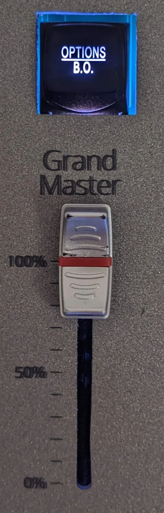
The main controllers of the console are the Grand Master, or GM, and the BlackOut, or B.O.
The Grand Master proportionally limits the output values of all the DMX addresses that have a Dimmer parameter patched.
The BlackOut toggles at Full or Zero the output values of all the DMX addresses that have a Dimmer parameter patched.
The Grand Master slider and the BlackOut button are the only “special” controllers that cannot be customized; their functions cannot be changed and they cannot have any object assignment.
The Grand Master slider and the BlackOut button have priority over the whole system, including all the Playback controllers and also the Editor.
11.1.2 A/B CrossFader
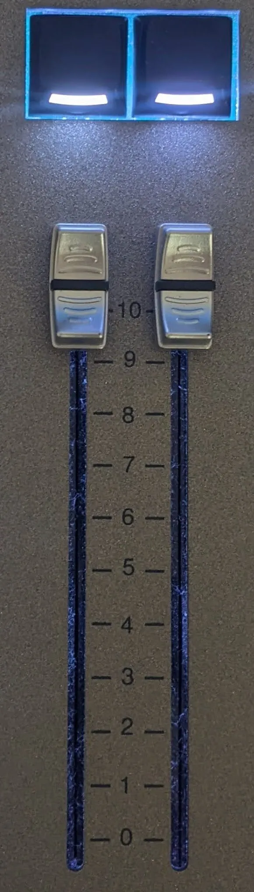
The Manual Crossfader set is a controller with 2 non-motorized sliders and 2 buttons.
The default action of the right button is Go
The default action of the left button is Hold/Back
The A/B CrossFader Pair is provided for manual “Theater Style” playback of cues.
By default the fader on the left will control dimmer parameters fading in.
By default the fader on the right will control all other values, including the dimmer that are fading out.
Parameter values that match will not dip even if the A and B are at different levels.
The A/B Controller Actions popup allows to set if the sliders’ behaviour should be Splitted (Separated) or Merged (In/Out).
11.1.3 Slider
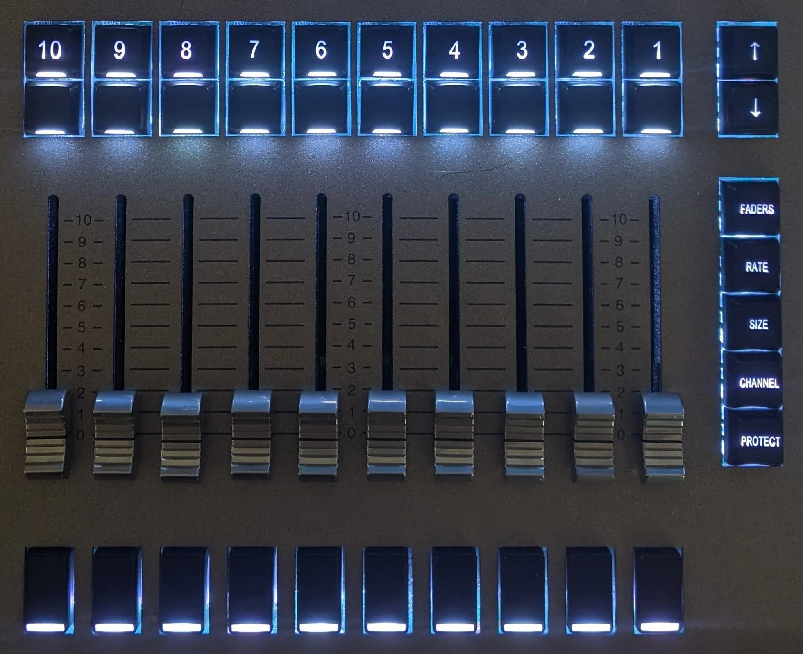
- The Slider set is a controller with 1 motorized slider and 3 buttons.
When a Qlist is assigned:
By default the fader will control intensity parameters
The default action of the top button is Go
The default action of the mid button is Hold/Back
The default action of the bottom button is Flash
When a Scene is assigned:
By default the fader will control all parameters
The default action of the top button is Go
The default action of the mid button is Hold/Back
The default action of the bottom button is Flash
When a Submaster is assigned:
By default the fader will act as a submaster
The default action of the top button is Group Select
The default action of the mid button is Group Deselect
The default action of the bottom button is Flash
11.1.4 Qkey
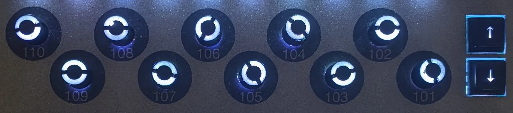
- The Qkey set is a controller with 1 knob or slider (virtual only) and 1 single button.
When a Qlist is assigned:
By default the knob will control intensity parameters
The default action of the button is Go
When a Scene is assigned:
By default the knob will control all parameters
The default action of the button is Go/Release
When a Submaster is assigned:
By default the knob will act as a submaster
The default action of the button is Group Select
11.1.5 AuxKey
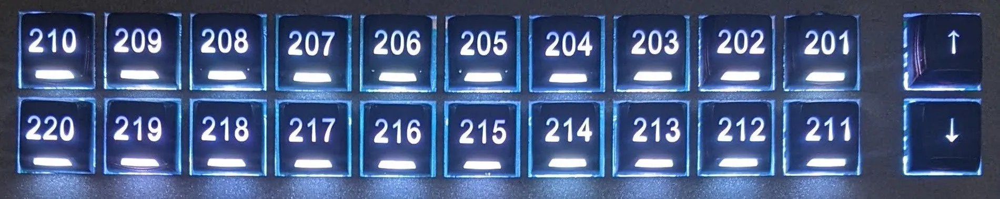
- The Auxkey set is a controller with 1 slider (virtual only) and 1 single button.
When a Qlist is assigned:
By default the knob will control intensity parameters
The default action of the button is Go
When a Scene is assigned:
By default the knob will control all parameters
The default action of the button is Go/Release
When a Submaster is assigned:
By default the knob will act as a submaster
The default action of the button is Group Select
11.1.6 Global Slider
- The Global Slider set is a controller with 1 non-motorized slider and 1 button.
When a Qlist is assigned:
By default the fader will control intensity parameters
The default action of the button is Go
When a Scene is assigned:
By default the fader will control all parameters
The default action of the button is Go
When a Submaster is assigned:
By default the fader will act as a submaster
The default action of the button is Group Select
11.2 Virtual Controllers
All the controllers can be added on the layout as Virtual Controllers.
Any controller can be both physical and virtual, and the list of all the Virtual Controller Views available can be found in the Playback Views submenus.
Virtual Controllers may be added as a single part (fader or button), as complete set, or in sets of 5 consecutive controllers.
The Virtual Controllers may be added to the Vibe Layout, moved, assigned and resized as preferred.
Vibe software makes no distinction between physical and virtual controllers, this allows the system hardware to be virtually scaled.
11.2.1 Grand Master + BlackOut
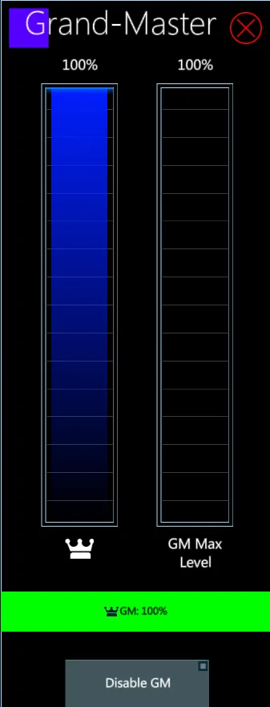
Open the virtual Grand Master with [SHIFT] + [B.O.]
In this view the Grand Master level can be set, it can be Disabled, and it also can be set to operate on a user-defined range, from 0%-100% to 0%-200%.
The Proportional Grand Master Level can be used for example in touring productions, where the rehearsal and the lighting programming may be done in a medium-sized venue for a show that will be performed both in smaller and bigger stages. Setting the G.M. at 100% with a level range up to 200% will allow the operator to keep enough margin to light up the bigger venues without need to add more fixtures.
The Disable GM button completely inhibits the Grand Master, while it is possibly to exclude form the Grand Master just specific DMX addresses. This is done via the Address View by editing the Address Properties.
A Virtual BlackOut button can be added to the layout by selecting it from the Single Button popup into the Program Views menu.
11.2.2 A/B Crossfader
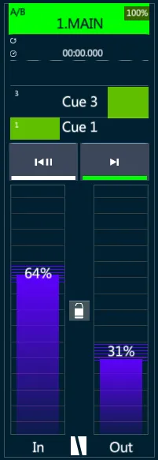
The Virtual A/B Crossfader has a Locker between the sliders used to set if the sliders’ behaviour should be Splitted (Separated) or Merged (In/Out).
11.2.3 Slider
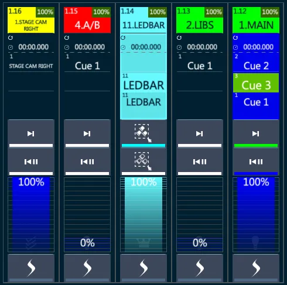
Virtual Sliders show the controller’s page and number, the name and number of the content loaded, the current and next Cue name and number, the fader level, and the icons of the functions assigned to the buttons and faders.
11.2.4 Qkeys
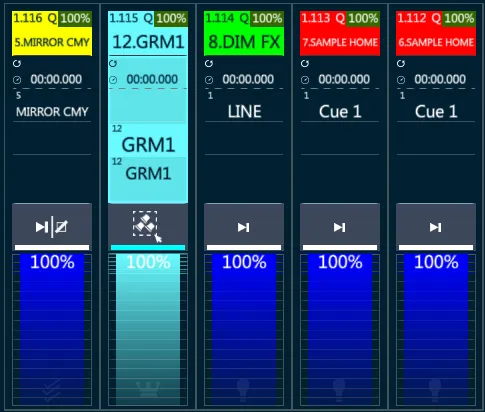
Qkeys can have a virtual button and a virtual fader, or a virtual set of fader and button, independently from the corresponding physical controller’s hardware (single button or knob).
Virtual QKeys show the controller’s page and number, the name and number of the content loaded, the current and next Cue name and number, the fader level, and the icons of the functions assigned to the buttons and faders.
11.2.5 Auxkey
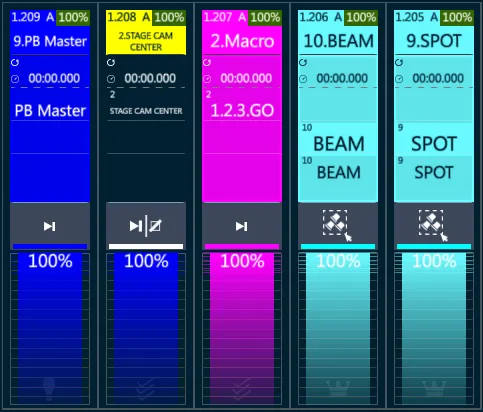
Auxkeys can have a virtual button and a virtual fader, or a virtual set of fader and button, independently from the corresponding physical controller’s hardware (single button).
Virtual AuxKeys show the controller’s page and number, the name and number of the content loaded, the current and next Cue name and number, the fader level, and the icons of the functions assigned to the buttons and faders.
11.2.6 Global Slider
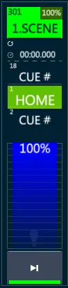
Global Sliders can have a virtual button and a virtual fader, or a virtual set of fader and button, independently from the corresponding physical controller’s hardware (the physical global sliders are only on the main Vibe console, but the virtual global sliders can be added to any layout).
Virtual Global Sliders show the controller’s page and number, the name and number of the content loaded, the current and next Cue name and number, the fader level, and the icons of the functions assigned to the buttons and faders.
11.3 Controller Keys
11.3.1 Master Keys
The Master Controller is the main controller to which the Master Keys and the syntax shortcuts are referred to.
One of the controllers is always assigned as the Master Controller.
Not more than one controller can be assigned as the Master Controller at the same time.
Any Controller may become the Master Controller at any time.
To assign a controller as the Master, press [SELECT] [HERE] to any of the buttons of the controller.
The LED color of the second button and the background of the virtual controller that identify the Master Controller is dark blue.
The A/B is only linked to the Master Controller if the [SELECT] is assigned to A/B.
- The Master Controller is linked to the Master Controller Keys.
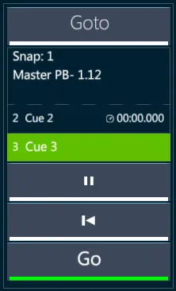
The Master Controller has 4 buttons associated:
[GO] - Initiates a forward timed fade between cues in the selected Qlist using the Cue Time.
[BACK] - Initiates a backward timed fade to the previous cue using the Default Back Time.
[HOLD] - Pauses the progress of a fade.
Pressing [HOLD] again resumes the transition.
Pressing [GO] will resume the transition as well.
Pressing [BACK] will fade to the previous cue.
[GOTO] - Advances to the specified cue using the GOTO Time.
Master shortcuts
There are some syntax shortcuts used to speed up the programming that are always referred to the Master Controller. The most common ones are:
[STORE] [STORE] - stores a Cue to the first free position of the Qlist loaded on the Master.
[STORE] [ENTER] - stores a Cue to the first free position of the Qlist loaded on the Master.
[CUE] [#] [STORE] - stores a Cue # to the Qlist loaded on the Master.
[CUE] [#] [UPDATE] - updates the Cue # of the Qlist loaded on the Master.
[CUE] [#] [EDIT] or [TEXT] or [TIME] or any other command - applies the command to the Cue # of the Qlist loaded on the Master.
[UPDATE] - opens the update popup, where the Master Controller can be assigned as Source Filter.
[GRAB] - opens the Grab popup, where the Master Controller can be set as Filter.
GOTO Commands
GOTO a cue on the Master Controller using system GOTO Time:
- [CUE] [#] [GOTO]
GOTO a cue on the Master Controller using a specified Time:
- [CUE] [#] [TIME] - Enter time value [GOTO]
GOTO a cue on the Master Controller using system Cue Time:
- [CUE] [#] [TIME] [GOTO]
GOTO a cue on the Master Controller using Goto Cue popup:
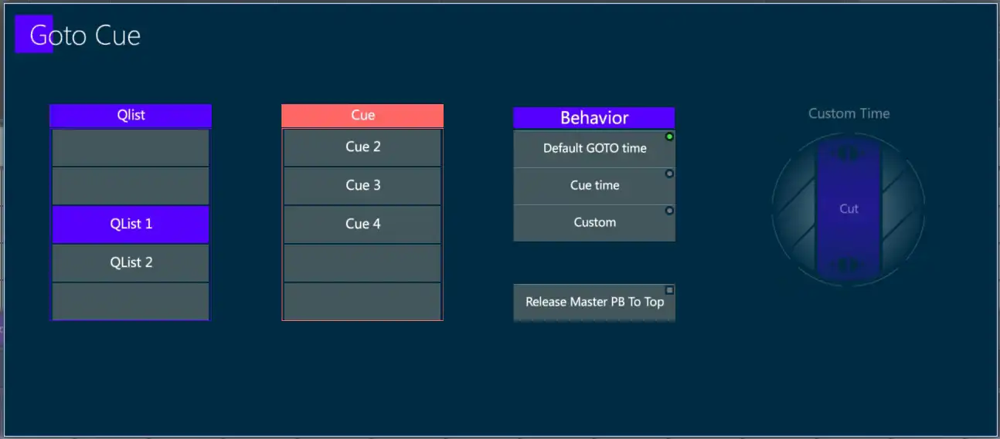
Press [GOTO] - Goto Cue popup will open.
Select {Qlist} if not the current Qlist on the Master Controller.
Select the {Cue}.
Select behavior.
{Default GOTO time} - Uses system default GOTO Time.
{Cue Time} - Uses Cue’s recorded time.
{Custom} - Set GOTO time using the Custom Time wheel or tap the center of the wheel until it turns red and set the time value from the keypad.
{Release Master PB on Top} - Releases the Master Controller.
- Tap Apply or press [ENTER] to close the popup and execute the GOTO.
If a Qlist other than the one that is currently on the Master Controller is selected, that Qlist will replace the current one on the Master Controller.
GOTO a cue NOT on the Master Controller:
- [QLIST] [#] [CUE] [#] [GO] (Controller must have a GO button assigned).
GOTO Cue Zero (Cue Zero is essentially {Release PB}):
- [CUE] [0] [GOTO]
GO out of sequence directly to a Cue on the Master Controller (in cue time):
- [CUE] [#] [GO]
11.3.2 Operation Keys
Operational Keys allow to manage the controllers with basic and fundamental operations.
The Operation Keys are physical buttons on the panel and can be added as virtual a view on the layout.
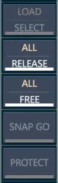
The Operational Keys are: Select, Load, Release, Free, Protect
[Select] - Sets the target controller as the Master.
[Load] - Preloads a controller with a specified cue #, but does not advance to that cue.
[Release] - Releases the destination controller from affecting the stage (Turns it off).
[Free] - Unloads the content from the controller (Makes it empty).
[Protect] - Locks the system with a user defined one-time password.
[Select] [Load] [Release] and [Free] do not work with the big Master Controller buttons, only with any button on the controller that is associated with it as the [SELECT] controller.
GOTO and LOAD are used to crossfade to cues out of sequence.
By default:
GOTO immediately transitions to the specified cue in the system GOTO Time.
LOAD preloads controllers. The next [GO] will transition to the preloaded cue in Cue Time.
Select Operations
Set a target controller as the Master:
- [SELECT] [HERE] to any controller button.
The Mid and Flash buttons’ LEDs and the Virtual controller’s background become Blue.
Load Operations
Load a cue on the Master Controller:
[CUE] [#] [LOAD] [HERE] - To Controller assigned as [SELECT]
Press [GO] - On Controller assigned as [SELECT]
LOAD a cue NOT on the Master Controller:
[QLIST] [#] [CUE] [#] [LOAD] [HERE] - Qlist and Cue will be preloaded.
Press [GO] - Controller will execute loaded cue.
If a Qlist other than the one that is currently on the Controller is specified, that Qlist will replace the current one with the specified cue pending.
Release Operations
Vibe has two types of release functions, Editor Release and Controller Release. The following deals with Controller Release.
Controller Release is done using the system Release Time, as set in system default settings.
Release a controller:
- [RELEASE] [HERE] to any controller button.
Pressing Release turns the Release button Red.
Release more controllers:
- [RELEASE] [RELEASE] [HERE] [HERE] [HERE]… to any controller button.
Pressing Release two times turns the Release button flashing Red.
Release All controllers.
- [VIBE] + [RELEASE]
Free Operations
Free unloads a controller and makes it empty, but it does not delete the loaded object.
Free a controller:
- [FREE] [HERE] to any controller button.
Pressing Free turns the Free button Red.
Free more controllers:
- [FREE] [FREE] [HERE] [HERE] [HERE]… to any controller button.
Pressing Free two times turns the Free button flashing Red.
Free All controllers.
- [VIBE] + [FREE]
Protect Operations
Protect is used to prevent the console to be operated by unwanted people.
Protect uses a user defined one-time password to Lock the system, keep the password in mind and use it carefully.
To Lock the system:
- [PROTECT] [PASSWORD] (any sequence of numbers) [ENTER]
To Unlock the system:
- [PROTECT] [PASSWORD] [ENTER]
OR
- Tap on the screen, Tap [UNLOCK], insert the [PASSWORD], Tap [UNLOCK]
11.3.3 Command Keys
Command Keys allow to manage the playback of the objects on the controllers, providing “On the Fly” access to button functions not directly assigned to controllers.
The Command Keys are physical buttons on the panel and can be added as a virtual view on the layout.
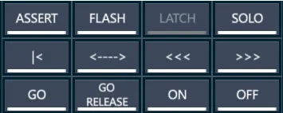
The Command Keys are:
[Assert] - Takes back control of parameters that have been “robbed” by other controllers. Assert acts as a Go command, but recalling the current Cue instead of the next one.
[Flash] - While pressed turns a controller On and at 100%.
[Latch] - Not implemented yet..
[Solo] - Turns off the intensity parameters on all controllers excluding the target controller.
[||<] - Hold/Back command on a controller. If a controller is running, pauses the controller. If a controller is static, initiates a BACK command to the previous Cue using the Back Time or the Cue Time (as set in system timing settings).
[<->] - Reverses the sequence direction (mainly used with loops and chasers).
[<<<] - Steps backwards through a Qlist ignoring time 👉 [VIBE] + [BACK] will also step backwards through the list.
[>>>] - Steps forwards through a Qlist ignoring time 👉 [VIBE] + [GO] will also step forwards through the list.
[Go] - Go command on a controller. Initiates a GO command to the next cue using the Cue Time.
[Go/Release] - First press initiates a GO command, second press initiates a RELEASE command.
[On] - Instantly turns ON a controller.
[Off] - Instantly turns OFF a controller.
👉 All Command Keys work with the same syntax, that is also common to the Free and Release Operation Keys.
Command a controller:
- [COMMAND] [HERE] to any controller button.
Pressing the Command turns the Command button Red.
Command more controllers:
- [COMMAND] [COMMAND] [HERE] [HERE] [HERE]… to any controller button.
Pressing the Command two times turns the Command button flashing Red.
Command All controllers.
- [VIBE] + [COMMAND]
11.3.4 Mode Keys
The Controller Mode keys are located at near the motorized sliders.
The motorized sliders may be assigned to any one of 4 modes.
Controller modes are are designed for “On the Fly” usage, allowing a quick modification to various rate and effect parameters.
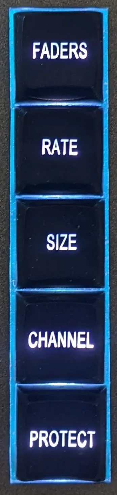
[FADERS] - Normal behavior for the Sliders, as assigned in Controller Definitions
[RATE] - The Sliders control the Rate of the fades, loops, effects, and chasers on the controller. Motorized faders will move to an optimized position of 33% allowing for proportional adjustment of a controller’s rate.
[SIZE] - The Sliders proportionally adjust the size of effects running on the controller.
[CHANNEL] - The Sliders control single DMX Addresses. Not implemented yet.
11.4 Controller Configuration
Controller buttons and sliders may be customized to allow maximum flexibility.
When Objects are initially assigned to Controllers, the buttons are configured as per the System Settings Defaults for Controller Actions and Controller Settings.
Each Controller may be configured individually by pressing [SETTINGS] [HERE] to any button of the controller or by tapping the box of the Playback Status view.
11.4.1 Playback Status
Playback Status is a view that shows the current live information of the controller’s content and configuration.
The PB Status may be added to the layout as a single box, for a single controller, or as a set of five consecutive controllers, usually positioned in the lower part of the screen.
The view’s settings allow to set which target controller is shown, that may be the A/B Crossfader, a Slider, a Qkey, an AuxKey or a Global Slider.
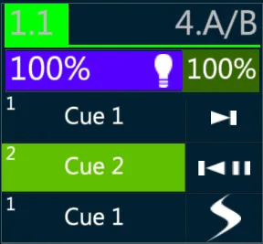
The contents shown on the PB Status are:
Controller Page and Number
Loaded object Number and Name
Loaded Object Type (based on the background color coding)
Fader Level (with Purple background)
Crossfade Rate Level (with Green background)
Previous, Current, Next Cue (for Qlists and Chasers)
Fader and Buttons Function Icons
Playback Status are also used for a direct access to the controller’s actions and settings and for the content’s properties configuration.
11.4.2 Controller Defaults
Controllers’ Defaults are divided in Actions and Settings.
To edit the defaults, open System Settings and tap on the Defaults Tab, then:
Tap Controller Actions to open the Default Controller Actions popup
Tap Controller Settings to open the Default Controller Settings popup
11.4.3 Controller Actions
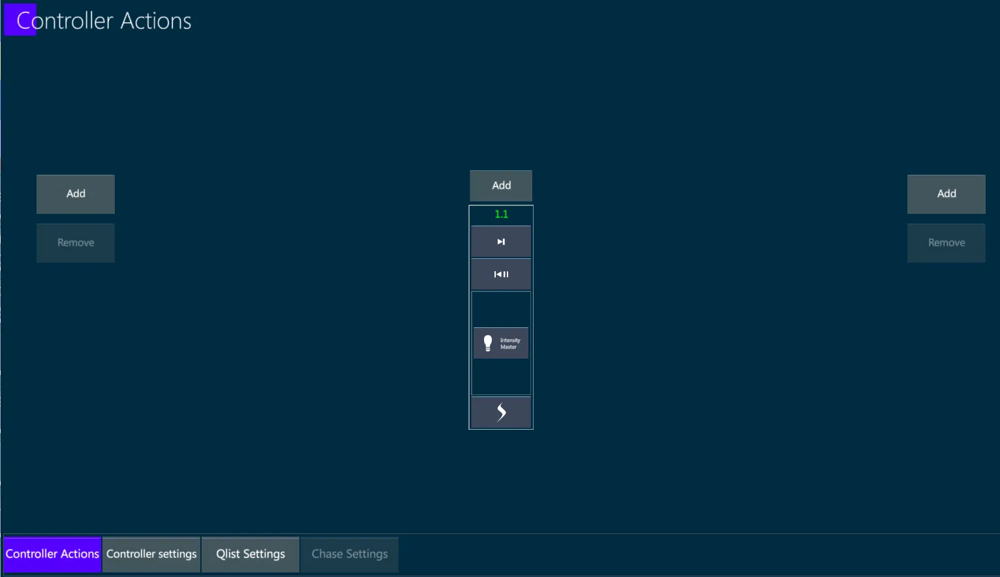
Assign Buttons and Slider Behavior:
- Press [SETTINGS] [HERE] to any button of the controller that has an object assigned to it - The Controller Actions popup will appear.
Alternatively, tap any of the controller Playback Status on the monitor.
Alternatively, press [Play-B] [#.#] [SETTINGS] on the hardkeys.
Tap one of the assignable {Button} or {Slider} - A context sensitive drop down menu based on the object assigned and the specific button selected will appear.
Choose a Control behavior from the menu.
Assignable Button Behavior:
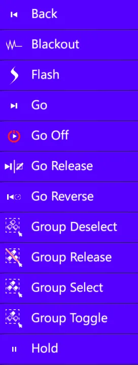
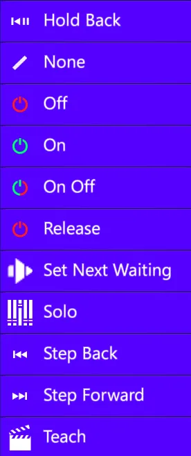
Blackout - Disables the Button.
Back - Fades to the previous Cue in Back Time.
Flash - Brings the Intensity to 100%.
Go - Fades to the next Cue in Cue Time.
Go Release - Toggles between Go and Release commands in Cue Time and Release Time.
Go Reverse - Fades to the previous Cue in Cue Time.
Group Deselect - Deselects the Fixtures currently activated from the Controller.
Group Release - Releases the Fixtures currently activated from the Controller.
Group Select - Selects the Fixtures currently activated from the Controller.
Hold - Pauses the fade.
Hold Back - Pauses the fade if it is running, makes a Back command if the fade is static.
None - Disables the Button.
Off - Makes a Release command in Cut Time.
On - Makes a Go command in Cut Time.
On Off - Toggles between Go and Release in Cut Time.
Release - Releases the controller in Release Time.
Solo - Turns off the intensity parameters on all the other controllers.
Step Back - Fades to the previous Cue in Cut Time.
Step Forward - Fades to the Next Cue in Cut Time.
Teach - Adjusts the Rate of Effects and Chasers based on the Tap Beat press timing.
Assignable Slider Behavior:
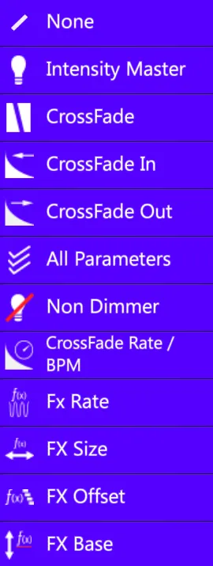
None - Disables the Fader.
Intensity Master - Controls the Dimmer or Virtual Dimmer parameter of the Cue/Scene.
Crossfade - Acts as a single crossfader.
Crossfade In - Acts as the In crossfader of a dipless crossfader pair.
Crossfade Out - Acts as the Out crossfader of a dipless crossfader pair.
All Parameters - Controls all the parameters of the Cue/Scene.
Non Dimmer - Controls all the parameters except the Dimmer of the Cue/Scene.
Crossfade Rate / BPM - Proportionally adjusts the Rate of the Chaser.
FX Rate - Proportionally adjusts the Rate of the running Effects.
FX Size - Proportionally adjusts the Size of the running Effects.
FX Offset - Proportionally adjusts the Offset of the running Effects.
FX Base - Proportionally adjusts the Base of the running Effects.
Submaster - Turns the Scene into a Submaster of the fixtures involved. (available only for Scenes and Submaster)
11.4.4 Controller Settings
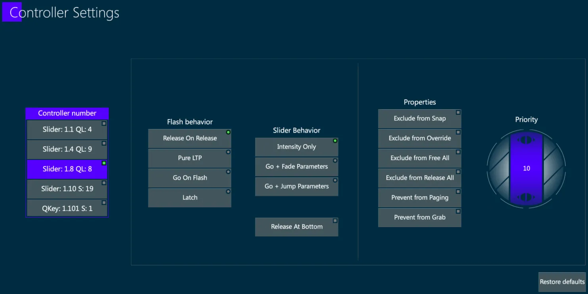
The left column allows to select one or more controllers to be configured.
If NO controllers are selected, the popup turns to the Default Controller Settings.
Flash behavior
Options to set the behavior of the flash button:
Release On Release
Pure LTP
Go On Flash
Latch
Slider behavior
Options to set the behavior of the slider:
Intensity Only
Go + Fade Parameters
Go + Jump Parameters
Release At Bottom
Properties
Options to set the properties of the controller:
Exclude from Snap
Exclude from Override
Exclude from Free All
Exclude from Release All
Prevent from Paging
Prevent from Grab
Priority:
Vibe keeps an LTP priority list of which controllers own parameters and the order in which they were asserted. Every time a controller is turned on, its parameters are asserted and the controller moves to the top of the list. Parameters that are still on active controllers but are currently overridden are said to be “robbed”. When the controller that owns the parameter is released from the stage, the last active controller to own the robbed parameter is now moved back to the top of the list and reasserted the parameter to the stage.
This feature is very useful for “On the Fly” programming where a main Qlist may be temporarily overridden by Qkeys or Controllers and quickly restored when they are released.
The Editor is always the highest propriety and will override any values from controllers until they are released or The Editor is reset.
Controllers assigned the same Priority number will be LTP among themselves.
Controllers with lower Priority will be overridden by controllers with higher Priority.
Controllers with higher Priority cannot be overridden by controllers with lower Priority.
Assign Priority:
Tap the top area of a controller display, the Settings popup will open.
Select the {Controller Settings} Tab.
OR
Press [SETTINGS] [HERE] to any controller button, the Settings popup will open.
Select the {Controller Settings} Tab.
Rotate the virtual wheel to the desired Priority Group number or tap the center of the wheel until it turns red and type a Priority number from 0 to 999.
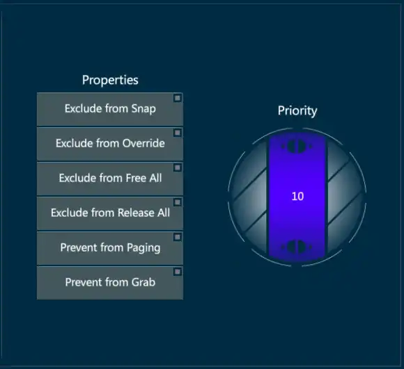
Move Controllers
A controller can be moved to any other, even if it’s a different type of controller.
The controller will be moved with all its settings and state, including intensity value etc.
[MOVE], Source selection (Occupied controllers), Target selection (Empty controller)
[MOVE], Source selection (Occupied controllers), @, Target selection (Any controller)
[PLAYBACK], [#], [MOVE], [PLAYBACK], [#], [PASTE]
11.4.5 Object Settings
The Object Settings popups depend on the object type.
The hardkeys method to open every object settings popup is: [OBJECT] [#] [SETTINGS]
where “Object” stands for Qlist, Cue, Scene, Library, Group, Snap, Macro
The softkeys method to open every object settings popup is:
- Long Tap on the target object’s Softkey (some options will appear) and move the finger on the Settings key.
If an object is loaded on a controller, also a direct way to access its settings is available.
The controllers method to open every object settings popup is:
- Tap on the object name into the Playback Status box.
Qlist Settings
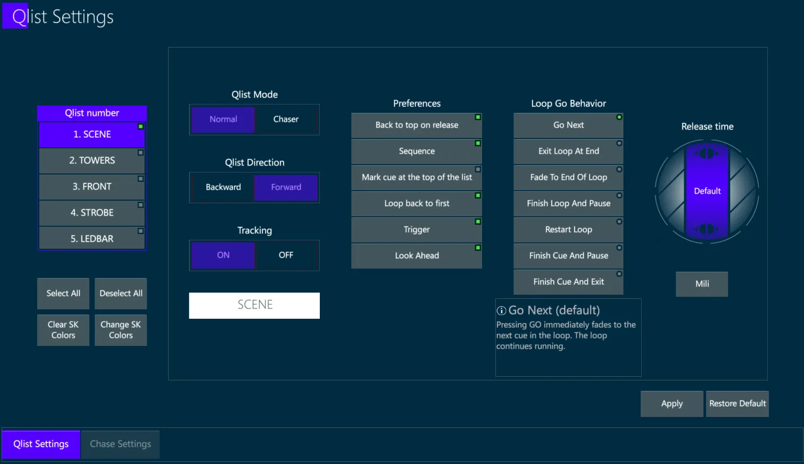
The first column allows to select one or more Qlists to be configured.
If NO Qlists are selected, the popup turns to the Default Qlist Settings.
The second column contains the Qlist Settings for:
Qlist Mode - Turn a Normal list of Cues into a Chaser and viceversa.
Qlist Direction - Toggle between Forward and Backward.
Tracking - Toggle between On and Off.
Qlist Name - Labels the Qlist, same as with the syntax [QLIST] [#] [TEXT] or with the long tap on the Qlist softkey and then the Text option.
The third column contains the Qlist Preferences:
Back to Top on release - Rollbacks to the first Cue when the controller is released.
Sequence - Enables/Disables the sequence of Cues.
Mark Cue at the top of the list - Adds a prepositioning Cue before the first Cue.
Loop back to first - A Go command on the last Cue will fade to the first Cue.
Trigger - Enables/Disables the Triggers of objects such as Macros linked to the Cues.
Look Ahead - Enables/Disables the Look Ahead option of the Qlist, with priority over the System Settings.
The fourth column contains the option for the Loop Go Behavior:
Go Next
Exit Loop At End
Fade To End Of Loop
Finish Loop And Pause
Restart Loop
Finish Cue And Pause
Finish Cue And Exit
Each of these options has a short explanation in the box below the column.
The Release Time Wheel may be used to set a specific Release Time for the Qlist, with priority over the System Settings.
👉 If changes are made to individual controller Qlist Settings, those changes stay with the controller and are not copied or updated to other controllers with the same Qlist.
👉 If it is desirable to update what will be copied to future assignments of the Qlist, toggle {Save to Qlist} On. Changes made to the current Qlist Settings will then be passed along the further Qlist assignments on other Controllers, in place of the Default Qlist Settings.
👉 Qlist properties may be restored to their user defaults by tapping the {Restore Default} key.
Chase Settings
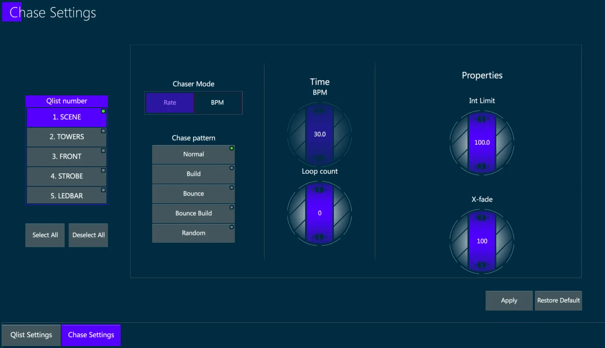
Chase Settings Tab is enabled only when the selected Qlist is in Chaser Mode.
The first column allows to select one or more Chasers to be configured.
If NO Chasers are selected, the popup turns to the Default Chaser Settings (not implemented yet).
The second column contains the Chaser Settings for:
Chaser Mode - Toggle the Chaser Time between Rate and BPM.
Chase Pattern - Defines the Chase behavior affecting the order of the Cues.
The third column contains the Chaser Time Preferences:
BPM - Sets the BPM of the fades, only enabled when the Chaser Mode is BPM.
Loop Count - Sets the number of loops that the Chaser will execute. If the Loop Count is 0, the quantity of Loops will be infinite.
The fourth column contains the Chaser Properties:
Int Limit - Limits the Intensity of the Dimmer parameters.
X-fade - Sets the crossfade between the Cues from 100% (full fade) to 0% (step fade)
👉 The same options to {Save to Qlist} and {Restore Default} of the Qlist Settings tab, are also available in the Chase Settings tab.
Cue Settings
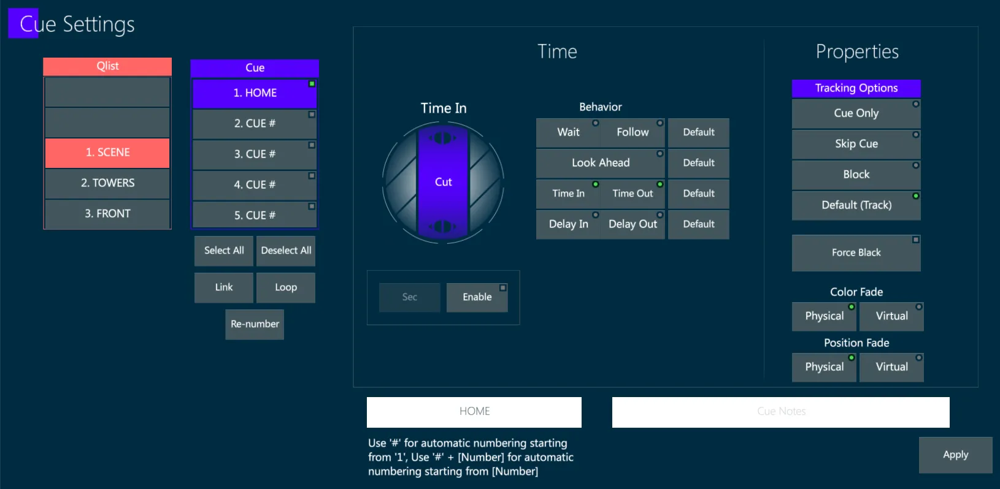
Cue Settings popup opens by tapping on the Cue name into the Playback Status box.
The first column allows to select the Qlist containing the Cue to be configured.
The second column allows to select one or more Cues to be configured.
If NO Cues are selected, the popup turns to the Default Cue Settings.
The buttons under the column are used to:
Re-number the selected Cues.
Link the selected Cue to another.
Loop the selected Cue to another, defining the number of loops to be executed.
The third column contains the Cue Time Settings.
The behavior lists all the timing possibilities and the Time wheel allows to adjust the selected ones.
The Default buttons bring the time back to the default setting.
The fourth column contains the Cue Properties.
Tracking Options define the tracking behavior of the selected Cue, that can be:
Cue Only
Skip Cue
Block Cue
Default (Track)
Specific buttons are used to:
Force Black - Enable/Disable a Force Black Cue before the selected Cue.
Color Fade and Position Fade - Toggle between Physical and Virtual to define is the fade to the selected Cue will involve the physical or the virtual parameters, respectively regarding the Color and the Position.
The White fields under the columns may be used to write the Cue’s name and the Cue’s notes.
👉 If the Cue selection is changed after editing the Cue settings, remember to press the APPLY button to store the changes, otherwise a popup will ask if you prefer to discard them.
👉 Differently from the Qlist and Chase Settings, that can be stored only on the controller, the Cue Settings are directly stored to the Cue and kept in case of further assignments.
Scene Settings
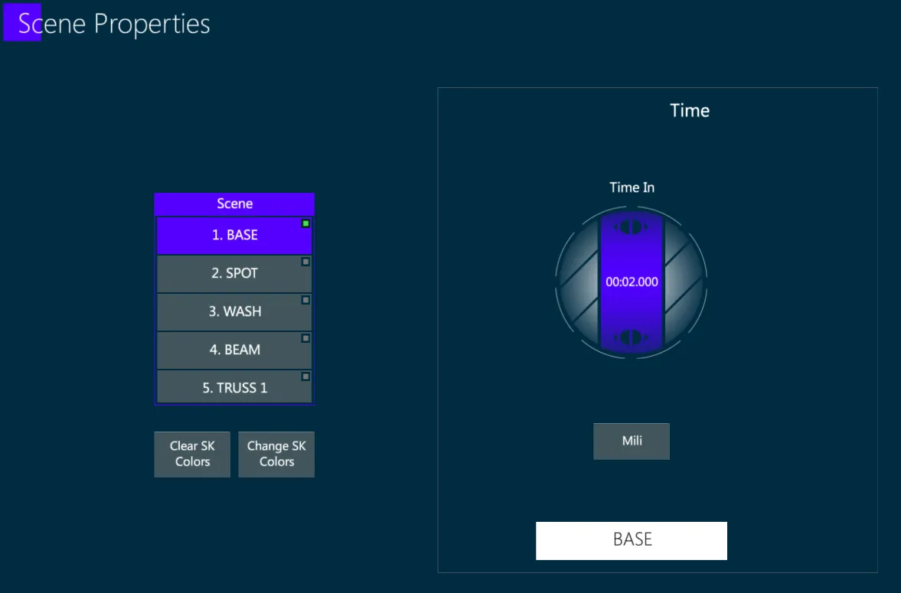
The first column allows to select one or more Scenes to be configured.
The second column contains the Scene Time Settings.
- Time In may be adjusted with the wheel.
The White field under the wheel may be used to write the Scene’s name.
👉 Differently from the Qlist and Chase Settings, that can be stored only on the controller, the Scene Settings are directly stored to the Scene, like the Cue Settings, and kept in case of further assignments.
11.4.6 Compound Controllers
Controllers may be extended in width and height to make larger compound controllers.
Compound controllers are used to expand the playback possibilities by getting more faders and buttons operating on the same object, so there can be more actions assigned.
There is no limit as to how wide a controller may be, but for practical purposes, a limit of 6 controllers per content is suggested.
For example a single Qlist can be assigned to two Sliders and two Qkeys and set the control of the controllers in the following way:
1st Slider: Intensity, Go, Back, Flash
2nd Slider: Crossfade, Step Forward, Step Back, Blackout
1st Qkey: FX Rate, On
2nd Qkey: FX Size, Off
Other useful examples of compound controllers combinations are:
creating additional Crossfader pairs,
adding Rate control to Chasers,
setting Group Selection, Deselection and Release to Submasters,
and many more…
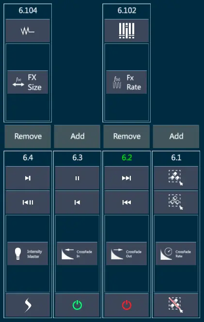
If Playback slider controllers and Qkey buttons are linked to the same object, it could be comfortable to synchronize the paging of Sliders and Qkeys.
This is done by pressing [VIBE] button together with the Up/Down paging buttons of either Playbacks or Qkeys.
11.4.7 Playback Master
A Playback Master is a controller that masters other controllers.
The LED and background color for playback master is blue.
Any key command on the master will be triggered to the controlled Playbacks (GO, BACK, etc.).
Any fader behavior and movement on the master will be triggered to the controlled Playbacks (Intensity, Rate, etc.).
Playback Masters are stored in snaps.
Set Up a PB Master
Press [PLAYBACK]
Tap [MASTER] on the toolbar
Press any of keys of the playbacks to be mastered
Press [STORE]
Press any key of the controller that becomes the Playback Master.
Not to be confused with the Master Controller, that can be only one at a time, the Playback Masters can be as many as needed.
11.5 Live Controller
The Live Controller View is used to check and follow the playback of the Qlist, Chase or Scene loaded on the target controller.
As many Live Controller Views as needed may be added to the layout, and each of them can be focused on a specific controller.
The Header of the view reports the controller that is currently shown and the name of the object loaded on that controller.
The List button enables/disables the automatic scrolling of the Cues.
The Arrow button shows or hides the empty columns (fields with no data).
The Chain button opens the Controller Selection popup.
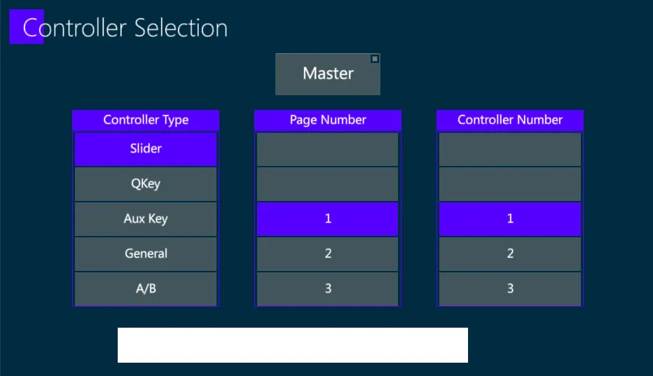
The target controller that needs to be shown on the view can be selected from the list on the popup, divided per Controller Type, Page Number and Controller Number.
The Master key, when enabled, makes the Live Controller View follow the Master Controller.
The Tabs on the bottom of the Live Controller view switch between:
- Cue Sheet - shows all the Cue’s numbers, names, times and notes.
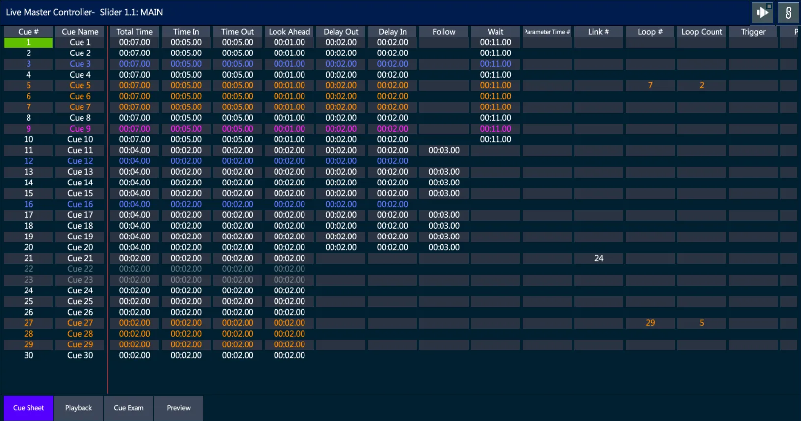
👉 Cue Sheet may be used to directly access the Cue’s Timing popup by tapping on the desired time cell, either to rename the Cues by tammping on the Cue Name cell and digit the text on the keyboard.
- Playback - shows all the Controller’s settings, actions and state.
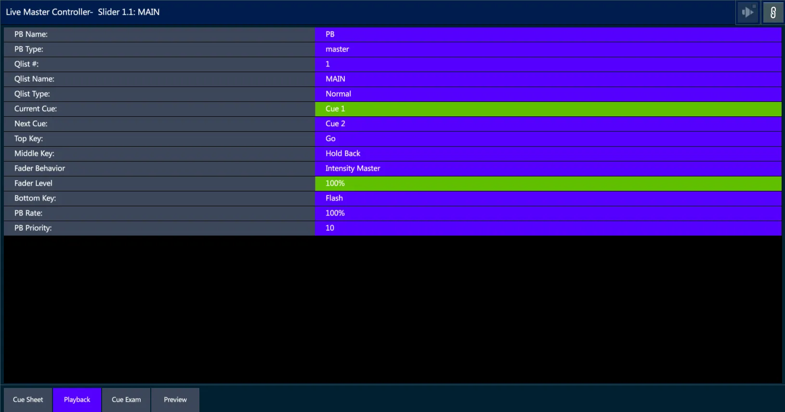
- Cue Exam - shows a table of the values contained in the current Cue, listed by Fixture.
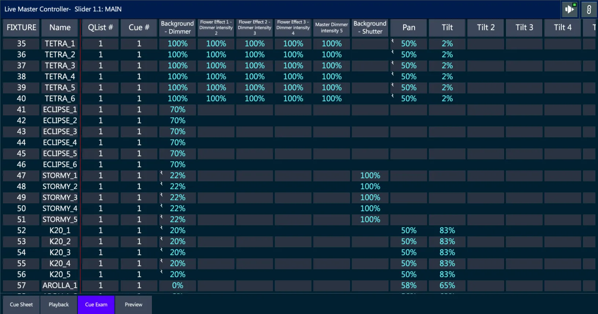
- Preview - shows a table of the values contained in the next Cue, listed by Fixture.
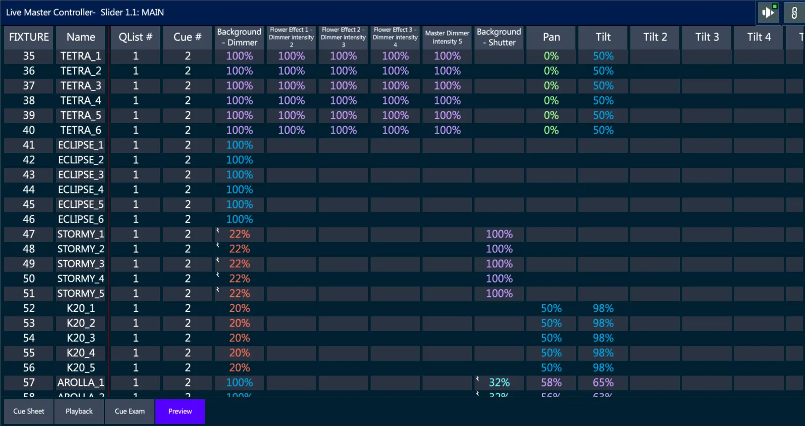
11.6 Teach Rate
Rate and Teach are the features designed to directly control the fading and looping speed of chasers and effects, and are very useful for live lighting playback.
Rate operates as a multiplier to linearly adjust the stored timing.
Rate can be assigned as a fader Action to any controller, splitted between Crossfade Rate (used with Chasers) and FX Rate (used with Effects).
Moreover the Rate button on the Controller Mode Keys sets all the sliders to control the rate.
Teach operates as a “tap beat” button to adjust the rate by giving timed inputs, according to the sound rhythm.
Teach can be assigned as a button Action to any controller and it affects both Chasers and Effects.
Additionally the Vibe panel offers two buttons dedicated to the Rate and Teach, used to open the Rate Picker on the Smart Screen and manage many playback rates at a time.
This screen view is very helpful in fine tuning chases and effects to synchronize with music or to improvise performances “on the fly”.
The Rate Screen operates outside of the editor and is non destructive. Changes made in the Rate Screen are not stored in cues but may be stored and recalled in Snaps.
Press the [RATE] button to open the Rate Picker on the Smart Screen.
Smart Screen - Rate Picker
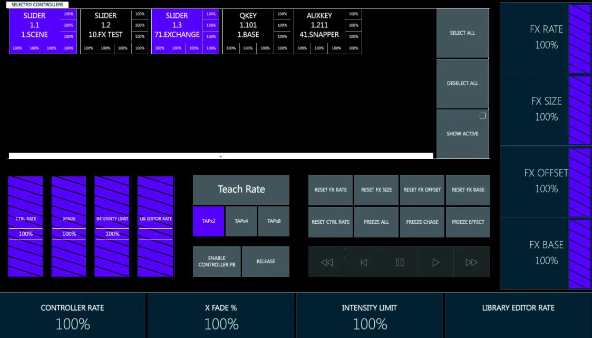
Rate Screen
Press [RATE]
All loaded controllers will appear in the “Selected Controllers” section of the smart screen. All loaded controllers will be shown and all controllers with Chasers or Effects running will be selected.
Pressing any physical or virtual [Key] of a controller, or tapping on the controller’s box in the Rate screen, will deselect all other controllers.
Additional controllers may be toggled on or off as desired, they will appear in the Selected Controllers display.
{Select All} will select all loaded controllers on the rate control.
{Deselect All} will deselect all selected controllers from the rate control
{Show Active} will remove all controllers in the “Selected Controllers” section that are not currently under the control of the rate wheels.
Encoder wheels
Wheel 1 - {Controller Rate} speeds up or slows down the cross fade rate of the controller. This may be used for cue transitions, chases, or effects. Range: 0% (Stopped) ⟶ 3000% (effectively cut time)
Wheel 2 - {X Fade %} adjusts the “fade vs jump” percent of a chaser. Range: 0% (full jump) ⟶ 100% (full cross fade)
Wheel 3 - {Intensity Limit} proportionally limits the intensity output of a controller. Range 0% (no intensity output) ⟶ 100% {full intensity}
Wheel 4 - {Library Editor Rate} adjusts the speed that Libraries are faded into the editor. Not implemented yet.
Four virtual sliders on the Rate Picker allow the same control of the encoder wheels.
Extra wheels
Wheel 1 - {FX Rate} adjusts the rate of effects that are running on the selected controllers.
Wheel 2 - {FX Size} adjusts the size of effects that are running on the selected controllers.
Wheel 3 - {FX Offset} adjusts the offset (Spread) of effects that are running on the selected controllers.
Wheel 3 - {FX Base} adjusts the base values (start point) of parameters that are in running effects on the selected controllers.
Reset keys
{Reset FX Rate} - Resets controlled FX rates back to their stored values.
{Reset FX Size} - Resets controlled size of effects back to their stored values.
{Reset FX Offset} - Resets controlled offset of effects back to their stored values.
{Reset FX Base} - Resets controlled effects base values back to their stored values.
{Reset Ctrl Rate} - Resets all controller rates back to their default of 100%.
Freeze keys
{Freeze All} - Pauses all running chases and effects until the {Freeze All} key is toggled again.
{Freeze Chase} - Pauses all running chases until the {Freeze Chase} key is toggled again.
{Freeze Effect} - Pauses all running effects until the {Freeze Effect} key is toggled again.
Freeze only affects chases and effects at the playback level, they are not released from the cue.
To indentify the Freezed Controllers, an indicator will appear on the controller’s Status Box in place of the Rate value:
FA for Freezed All
FC for Freezed Chase
FE for Freezed Effect
Transport Bar
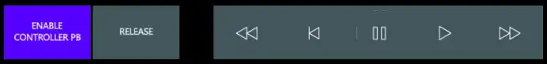
When actively in the Rate Screen, physical controller keys are mapped to the rate interface and may not be used to activate Qlists, cues, or scenes. As an alternative, the transport bar may be used. To use the transport bar:
Tap {Enable Controller PB} to activate the Transport Bar. (The controller keys are now active with the assigned functions).
Select the controllers to control with the bar by toggling any of the controller’s physical control keys
Use the transport Bar buttons to:
{<<} Step Back
{|<} Back
{||} Hold (Pause)
{>} Go
{>>} Step Forward
- {Release} may be tapped at any time to deactivate the selected controllers using release time.
Teach Rate
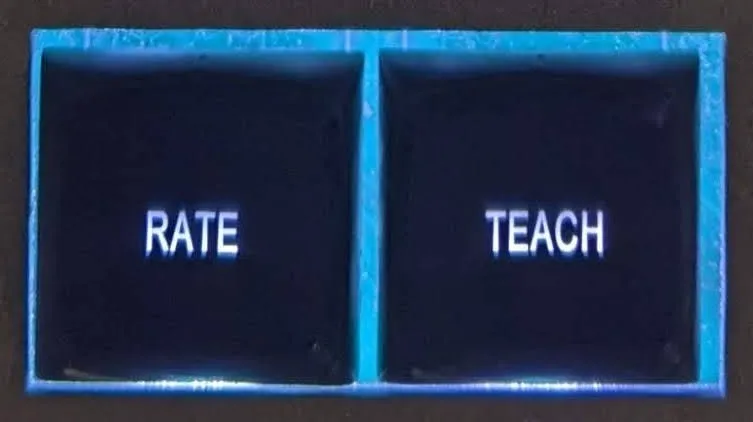
Teach may be used with the button on the Rate screen or with the [TEACH] button on the panel.
- Set the number of taps to be averaged:
{TAPx2} for 2 taps - [TEACH] button’s LED becomes Red
{TAPx4} for 4 taps - [TEACH] button’s LED becomes Green
{TAPx8} for 8 taps - [TEACH] button’s LED becomes Blue
- Tap {Teach Rate} or press [TEACH] the number of times defined.
{Teach Rate} will show the number of taps received.
[TEACH] will blink until the total number of taps is reached.
- The selected controllers’ rate will change accordingly to the average time between the pressures of Teach.
[SHIFT] + [TEACH] allows to switch between 2, 4 and 8 taps with no need to open the Rate Screen.